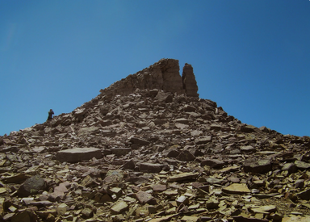
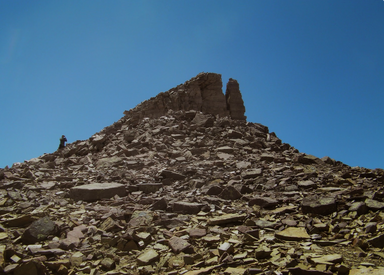
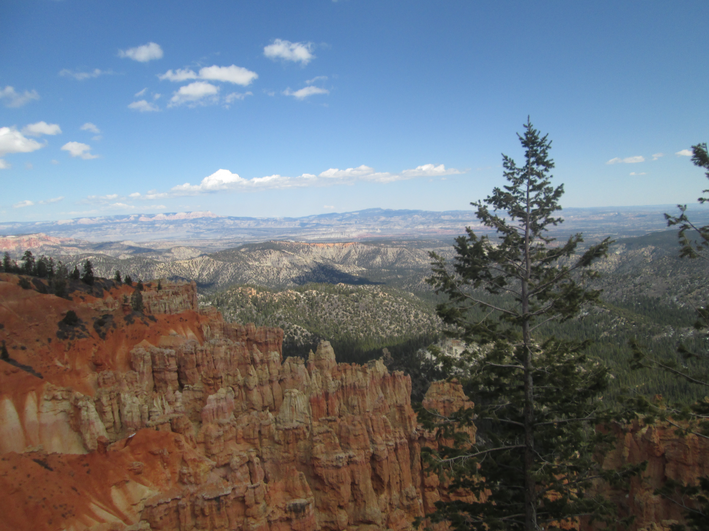

Overview
Purpose
Have you ever wanted to escape the doldrum of life? Camping can be a great way to relax and refresh yourself from the monotony of modern life. On this page I will link sources of places you can go, equipment you need, and step by step instructions to ensure that your camping experience is sublime, even as a novice.
Audience
The best understanding that you can have is that you don't have to be an experienced camper, you just need to have an ifinity of the great outdoors.
Branding
Website Logo

Style Guide
Color Palette
Palette URL: https://coolors.co/396e94-e7c24f-a43312-381d2a-aabd8c| Primary | Secondary | Accent 1 | Accent 2 |
|---|---|---|---|
| [#396E94] | [#E7C24F] | [#A43312] | 8DB38B |
Typography
Heading Font: Raleway
Paragraph Font: Oswald
Normal paragraph example
Have you ever wanted to escape the doldrum of life? Camping can be a great way to relax and refresh yourself from the monotony of modern life. On this page I will link sources of places you can go, equipment you need, and step by step tutorials to ensure that your camping experience is sublime, even as a novice.
Colored paragraph example
Trips vary from mild and great for families, to trips exclusively for physically fit and experienced rafters. No matter what type of river adventures you are seeking, Camp_Roostie can make it happen for you.
Navigation
Site Map
Content
Home page
This is the epitome of all the High points and the hardest to climb of the lower 48. You will never forget your visit to Kings Peak, Utah. Climbing the peak combines with fascinating scenery to make it a truly unforgettable hike. The peak is filled not only with scree making it the hardest of the lower 48 to hike without the need for specialized equipment, At 13, 528 ft, it’s best accessible by the Henry Fork Trail Head. Hiking Kings Peak, is free and as a result, it’s a very popular peak to climb. Hiking to the peak can be done in one day, but it’s recommended to do it in 2-4 days.
Images for the Home page

 

Equipment
Camping in Utah County provides some of the best in local scenery and great campgrounds with some great amenities and facilities, providing a great experience for RV, tent and hammock camping for the novice to advanced. One of the best areas to camp is the Maple Lake Campground. The fees are nominal and they will be provided later. From fishing and hiking to the nearby meadows there’s plenty to do to explore the mountains. There are plenty of free places to camp in Payson Canyon as well with plenty of room for night games and great family activities.
Images for the Equipment page


Tutorials
Through time and experience I have an affinity and respect for the great outdoors. This has given me the opportunity to realize that there are many that don’t know where to start when they plan a camping trip. It is this awareness that you will find the videos and tutorials here will help you plan the best camping trip with the best of memories.
Images for the Tutorials page
Wireframes
Create three wireframes for your site. One for each page and list them here
Home
[Any additional details about home that the wireframe does not make clear]
Equipment
[Any additional details about Equipment that the wireframe does not make clear]
Tutorials
[Any additional details about Tutorials that the wireframe does not make clear]